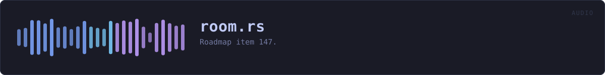

crates/veilvoice-audio/src/room.rs
veilvoice-audio · 614 lines · read the source here · or on GitHub
Marker 147. Several microphones at once: a guest each, veiled each, mixed once.
What this is for
An interview with everybody in the room on their own microphone. Each guest gets their own engine with their own seed and their own destination voice, exactly as a group render gives them, and the veiled results are mixed into the one output the call or the recorder is listening to.
live(crate::live) opens one input. That is the right shape for one person on a call and the wrong shape for a room, because one microphone carrying four people is one signal: whatever it is turned into, everybody in it is turned into the same thing, and a listener can no longer follow who is speaking.
One engine per guest is one FFT chain per guest, on one deadline
The output callback runs every guest's engine before it returns. They share a deadline of a few milliseconds, so the cost is the sum, and this is the honest account the marker asked for rather than a paragraph promising it is fine: RoomStats::load is that sum measured against that deadline, drawn where somebody can see it. At 1.0 the engines have used the whole of the time the block had, and what follows is dropouts.
It is a measurement rather than a limit, because the number of guests a machine can carry is a fact about the machine. MAX_GUESTS is a bound on the arithmetic, not a claim about performance.
The mix is summed and clipped, and never limited
Two people talking at once is two signals added together, which can go past full scale. A render fixes that afterwards by scaling the whole file by one factor, which a live path cannot do because it cannot see the rest of the conversation.
So the sum is clipped, the peak before clipping is reported, and the number of blocks that clipped is counted. There is deliberately no limiter: a limiter is a dynamics processor, it changes the voice, and this program's entire claim is about what changes a voice and what does not. Adding one to avoid a warning would mean a second thing altering the sound that nobody asked for. The warning is the honest end of that.
Every microphone has its own clock
Two USB microphones are two oscillators, and neither is the output's. Each guest gets their own ring, of the same length live(crate::live) uses, which absorbs the jitter and reports what it could not: a guest whose device runs slightly fast fills their ring and drops samples, counted against that guest, and one running slow starves and is padded with silence.
What is not absorbed is a rate mismatch, which is F-168 and is refused before anything starts: see live::agree_on_a_rate_for.
In plain words
Everybody in the room speaks into their own microphone. Each voice is disguised separately, so they still sound like different people, and the result is mixed together into one signal for the call or the recording.
Disguising four voices at once is four times the work, on the same short deadline, so the screen shows how much of that deadline is being used. If it reaches the top, the computer cannot keep up and the sound will break.
WHAT THIS FILE CONTAINS
614 lines defining 5 functions (4 public), 7 types and 1 constant. Everything below is read out of the source, so it cannot disagree with the code.
The types it owns.
struct Guestline 84 · One guest: the microphone they speak into and the voice they become.struct GuestStatsline 103 · What one guest's half of a running room is doing.struct RoomStatsline 118 · What a running room is doing, safe to read from the interface.struct KeptRoomline 145 · The recorders a room was asked for.struct RoomSessionline 153 · A running room.struct Sharedline 161struct Voiceline 192 · Everything one guest's engine needs, owned by the output callback.
What happens when it runs. These are the ways in: public, and nothing else in this file calls them, so they are what an outside caller reaches first.
RoomSession::startline 208 · Open every guest's microphone, veil each, and mix into output.RoomSession::guestsline 448 · How many guests this room opened.RoomSession::statsline 460 · Read the counters, resetting the peak meters.RoomSession::interferenceline 483 · What the platform last reported about any of the streams.
WHAT CALLS WHAT
The functions this file defines, and the calls between them. An edge means the callee's name appears, called, inside the caller's body. This is a syntactic reading, not a type-resolved one.
The same graph as Mermaid source
%%{init: {"theme":"base","themeVariables":{"background":"#1a1b26","primaryColor":"#1f2335","primaryTextColor":"#c0caf5","primaryBorderColor":"#7aa2f7","secondaryColor":"#16161e","tertiaryColor":"#16161e","lineColor":"#737aa2","textColor":"#c0caf5","mainBkg":"#1f2335","nodeBorder":"#7aa2f7","clusterBkg":"#16161e","clusterBorder":"#2f3549","fontFamily":"ui-monospace, SFMono-Regular, Consolas, monospace","fontSize":"14px"}}}%%
flowchart TD
n_report["Shared::report<br/>line 174"]
n_start(["RoomSession::start<br/>line 208"])
n_guests(["RoomSession::guests<br/>line 448"])
n_stats(["RoomSession::stats<br/>line 460"])
n_interference(["RoomSession::interference<br/>line 483"])
click n_report href "https://github.com/tilas01/veilvoice/blob/main/crates/veilvoice-audio/src/room.rs#L174" "open the source"
click n_start href "https://github.com/tilas01/veilvoice/blob/main/crates/veilvoice-audio/src/room.rs#L208" "open the source"
click n_guests href "https://github.com/tilas01/veilvoice/blob/main/crates/veilvoice-audio/src/room.rs#L448" "open the source"
click n_stats href "https://github.com/tilas01/veilvoice/blob/main/crates/veilvoice-audio/src/room.rs#L460" "open the source"
click n_interference href "https://github.com/tilas01/veilvoice/blob/main/crates/veilvoice-audio/src/room.rs#L483" "open the source"
classDef entry fill:#1f2335,stroke:#7aa2f7,color:#c0caf5
class n_start,n_guests,n_stats,n_interference entry
classDef helper fill:#1f2335,stroke:#bb9af7,color:#c0caf5
class n_report helperThis site loads no third-party script, so it cannot run Mermaid; the diagram above is the same nodes and edges drawn by the generator instead. GitHub renders the source below directly.
ITEMS
| Item | Line | Documentation |
|---|---|---|
MAX_GUESTS pub const | 81 | The most microphones one room will open at once. |
Guest pub struct | 84 | One guest: the microphone they speak into and the voice they become. |
GuestStats pub struct | 103 | What one guest's half of a running room is doing. |
RoomStats pub struct | 118 | What a running room is doing, safe to read from the interface. |
KeptRoom pub struct | 145 | The recorders a room was asked for. |
RoomSession pub struct | 153 | A running room. |
Shared struct | 161 | |
Shared::report fn | 174 | Record what the platform said about one of the streams. |
Voice struct | 192 | Everything one guest's engine needs, owned by the output callback. |
RoomSession::start pub fn | 208 | Open every guest's microphone, veil each, and mix into output. |
RoomSession::guests pub fn | 448 | How many guests this room opened. |
RoomSession::stats pub fn | 460 | Read the counters, resetting the peak meters. |
RoomSession::interference pub fn | 483 | What the platform last reported about any of the streams. |